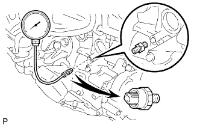
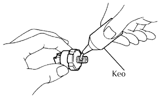

HỆ THỐNG BÔI TRƠN > KIỂM TRA TRÊN XE |
| 1. KIỂM TRA MỨC DẦU ĐỘNG CƠ |
Hâm nóng động cơ, tắt máy và đợi 5 phút. Mức dầu nên nằm giữa vạch thiếu và vạch chỉ mức đầy của que thăm dầu.
Nếu mức dầu thấp, kiểm tra rò rỉ và bổ sung dầu cho đến vạch chỉ mức đầy.
| 2. KIỂM TRA CHẤT LƯỢNG DẦU ĐỘNG CƠ |
Kiểm tra sự biến chất, lẫn nước, biến màu hoặc loãng của dầu.
| 3. KIỂM TRA ÁP SUẤT DẦU |
|  |
Ngắt giắc của công tắc áp suất dầu.
Tháo công tắc áp suất dầu.
Lắp cảm biến áp suất dầu.
Hâm nóng động cơ.
Kiểm tra áp suất dầu dưới các điều kiện sau.
| Điều kiện | Điều kiện tiêu chuẩn |
| Không tải | 29 kPa (0.3 kgf/cm2, 4.2 psi) trở lên |
| 3,000 vòng/phút | 160 đến 490 kPa (1.6 đến 5.0 kgf/cm2, 23 đến 71 psi) trở lên |
Tháo đồng hồ áp suất dầu.
| 4. LẮP CỤM CÔNG TẮC ÁP SUẤT DẦU ĐỘNG CƠ |
|  |
Bôi keo lên 2 hoặc 3 ren của công tắc áp suất dầu.
Lắp công tắc áp suất dầu.
Nối giắc của công tắc áp suất dầu.
Khởi động động cơ và kiểm tra rò rỉ dầu động cơ.